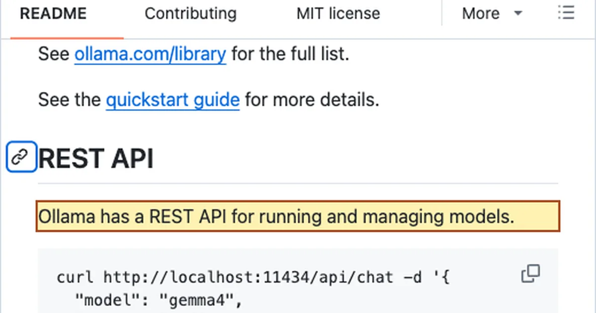
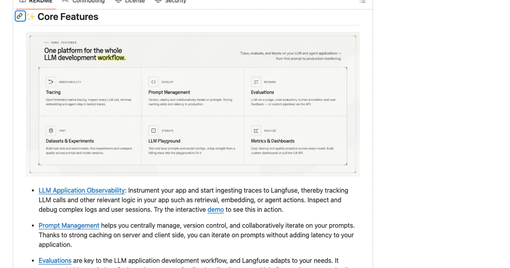

2026. 9. 18 (금) · 약 8분
AI 앱을 만들 때 Ollama, vLLM, LiteLLM, Langfuse를 한 줄에 놓고 ‘무엇이 더 좋나’ 묻기 쉽다. 먼저 답하면 넷은 같은 자리를 두고 겨루는 도구가 아니다. 모델을 어디서 실행할지, 여러 요청을 누가 통제할지, 실패를 어디서 추적할지로 나누면 필요한 도구만 고를 수 있다.
개발·AI 인사이트
30초 요약
- Ollama와 vLLM은 모델을 실행하는 층에 있고, LiteLLM은 요청을 여러 모델로 보내는 관문이며, Langfuse는 실행 경로를 추적한다.
- 먼저 모델을 직접 운영할지 정한 다음 공유 호출·권한 관리가 필요할 때 관문을, 실패 원인을 따라가야 할 때 추적을 붙인다.
- 이 글은 공식 문서의 역할을 분류한 판단표이며 성능·비용 우열을 직접 측정한 결과는 아니다.
먼저 알아둘 말
- 모델 서빙
- 모델을 메모리에 올려 앱의 요청에 응답하도록 실행하는 일이다.
- 추론
- 학습된 모델이 새 입력에 대해 답을 생성하는 과정이다.
- 게이트웨이
- 앱과 여러 모델 API 사이에서 요청을 받아 라우팅하고 접근을 통제하는 관문이다.
- 트레이스
- 요청 하나가 모델 호출과 도구 사용을 거친 순서를 묶어 남긴 기록이다.
개발·AI 인사이트
근거와 해설 · Ollama · vLLM · LiteLLM · Langfuse · PagedAttention · 2026. 9. 18
Ollama·vLLM·LiteLLM·Langfuse 차이: AI 앱 역할별 선택 기준
AI 앱 도구 네 가지를 모델 실행·요청 관문·실행 추적의 책임으로 나누고, 필요한 층과 생략할 층을 고른다.
먼저 나눌 질문은 ‘어디서 실행하나’다
Ollama와 vLLM은 모델을 직접 실행하는 층에 있다. LiteLLM은 모델 앞에서 요청을 받는 관문이고, Langfuse는 앱이 무엇을 했는지 기록한다. 네 이름은 같은 비교표에 있어도 답하는 질문이 다르다.
- 내 앱이 모델을 직접 운영할지 먼저 정한다.
- 로컬 실험이면 Ollama, 공유 추론이면 vLLM의 운영 조건을 확인한다.
- 여러 모델·사용자·키 관리가 필요할 때만 LiteLLM 관문을 검토한다.
- 실패 원인을 요청 단위로 따라가야 하면 Langfuse 추적을 검토한다.
모델을 직접 운영하지 않고 외부 API 하나만 부르는 작은 앱이라면, 처음부터 로컬 추론 서버가 필요하지 않을 수도 있다. 반대로 자체 모델이 필요하다면 먼저 하드웨어, 동시 요청, 운영 인력을 확인해야 한다.
Ollama와 vLLM은 같은 층에서 무엇이 다른가
Ollama의 공개 README는 모델을 내려받아 실행하고 로컬 REST API로 호출하는 흐름을 보여 준다. 개인 개발 환경이나 작은 실험에서 모델을 손에 잡히게 다루는 출발점이다.

첫 선택은 기능 목록보다 운영 조건에서 갈린다. 개발자 한 명의 반복 실험과 사내 여러 서비스의 동시 호출은 필요한 메모리와 장애 대응이 다르다. 모델 파일을 보관할 위치, GPU를 누가 관리할지, 요청이 늘 때 누가 병목을 볼지도 함께 정해야 한다.
vLLM은 모델 서빙의 처리 효율에 초점을 둔다. 공식 저장소는 연속 배치, 메모리 관리, OpenAI 호환 API 서버를 설명한다. 원 논문의 PagedAttention 결과는 연구 당시 비교 조건의 처리량 결과다. 지금 내 GPU에서 같은 배수가 나온다는 뜻은 아니다.
| 상황 | 먼저 볼 도구 | 확인할 조건 | 아직 보류할 것 |
|---|---|---|---|
| 개인 PC의 모델 실험 | Ollama | 모델 크기·메모리·로컬 API | 공유 서버와 관문 |
| 여러 사용자의 자체 모델 호출 | vLLM | GPU·동시 요청·배포 운영 | 논문 수치를 내 성능으로 가정 |
| 외부 제공 모델 API만 사용 | 둘 다 필수 아님 | 제공자 약관·키·비용 | 자체 추론 인프라 |
Ollama와 vLLM의 실제 속도 우열은 이 표에서 판정하지 않는다. 동일 모델·하드웨어·입력 길이·동시 요청으로 측정해야 비교할 수 있다.
LiteLLM은 왜 모델 대신 관문에 서는가
관문을 도입해도 공급자별 API 차이가 전부 사라지지는 않는다. 모델 이름과 파라미터, 스트리밍·도구 호출 지원을 앱의 실제 요청으로 확인해야 한다. 가상 키를 발급한다면 보관과 회수 책임도 새로 생긴다.
LiteLLM은 여러 모델 제공자를 같은 호출 경로 뒤에 두고 가상 키, 라우팅, 비용·사용량 통제를 다루는 게이트웨이다. 이미 응답하는 모델이나 제공자 API가 있어야 의미가 있다. 모델을 직접 추론하는 엔진의 대체품으로 고르면 문제가 어긋난다.
한 제공자와 한 앱만 연결했다면 코드의 기본 API 클라이언트로 충분할 수 있다. 모델 제공자가 늘거나 팀별 키·예산·실패 시 경로를 통제해야 할 때 게이트웨이의 운영 비용을 검토한다.
Langfuse는 어느 질문에 답하나
요청은 성공했는데 답이 나빠졌다면 HTTP 상태 코드만으로 원인을 찾기 어렵다. Langfuse는 모델 호출, 검색, 에이전트 동작을 한 요청의 트레이스로 묶어 살펴보는 관측성 도구다.

추적을 붙일 때는 한 번의 모델 호출만 기록해도 원인 분석이 끝나는지 확인한다. 검색 결과, 프롬프트 조립, 외부 도구 호출까지 이어진 앱이라면 각 단계의 관계가 남아야 실패 지점을 찾을 수 있다.
추적을 켜면 입력과 출력이 기록될 수 있다. 고객 문서나 민감한 프롬프트를 다루는 앱은 보존 기간, 비식별화, 접근 권한을 먼저 정해야 한다. 한두 번의 로컬 실험에는 간단한 로그가 더 나을 수 있다.
작은 앱에서 시작해도 네 도구를 모두 켜야 할까
| 현재 질문 | 고를 층 | 생략해도 되는 때 |
|---|---|---|
| 내 컴퓨터에서 모델을 돌릴 수 있나 | Ollama 같은 로컬 실행 | 외부 API만 쓰면 생략 |
| 자체 모델에 동시 요청을 받나 | vLLM 같은 서버 추론 | 공유 서비스가 없으면 생략 |
| 모델·제공자·사용자별 호출을 통제하나 | LiteLLM 같은 관문 | 경로와 키가 하나면 보류 |
| 답이 나빠진 단계를 찾아야 하나 | Langfuse 같은 추적 | 간단한 로그로 충분하면 보류 |
예를 들어 개인 프로토타입은 Ollama 하나와 앱 로그만으로 출발할 수 있다. 팀 서비스에서 자체 모델을 공유한다면 vLLM의 배포 조건을 먼저 보고, 여러 공급자와 권한 정책이 생기면 관문을 검토한다.
독립 실전 자료도 실행·게이트웨이·관측성을 별도 층으로 다룬다. 여기서 더한 판단은 ‘모든 층을 조립하라’가 아니라 현재 병목이 없는 층은 생략하라는 순서다.
근거와 한계: API 호환은 운영 호환이 아니다
네 저장소의 README와 원 논문은 각 제품의 주 역할을 확인하는 출발점이다. OpenAI 호환 엔드포인트가 있어도 모델 품질, 토큰화, 동시성, 인증, 로그 보존 방식까지 같다는 보장은 없다.
이 글은 소스 조사에 따른 구조 분석이다. 직접 설치하거나 부하 시험을 하지 않았다. 특정 하드웨어의 처리량, 총비용, 장애 복구 능력은 이 근거만으로 순위를 매길 수 없다.
공식 문서가 바뀌거나 앱의 사용자 수·모델 공급자·데이터 정책이 달라지면 선택표를 다시 읽어야 한다. 먼저 해결할 문제를 모델 실행, 요청 통제, 실패 추적 중 하나로 명시하면 필요한 도구가 좁혀진다.
참고한 자료
네 도구를 한 번에 설치할 이유는 없다. 우선 모델을 직접 실행할지와 예상 사용자를 정한다. 호출 경로가 늘어나면 관문을 붙이고, 결과를 설명할 수 없을 때 추적을 더한다. 운영 부담도 각 층마다 함께 늘어난다. 지금 만드는 AI 앱에서 먼저 해결할 문제가 모델 실행, 요청 통제, 실패 추적 중 무엇인지 한 문장으로 적고 그 층의 공식 문서부터 읽는다.